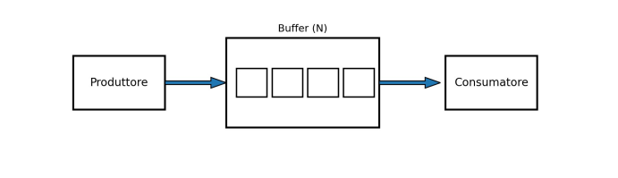
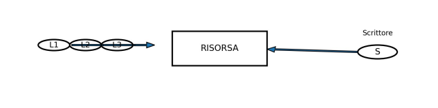
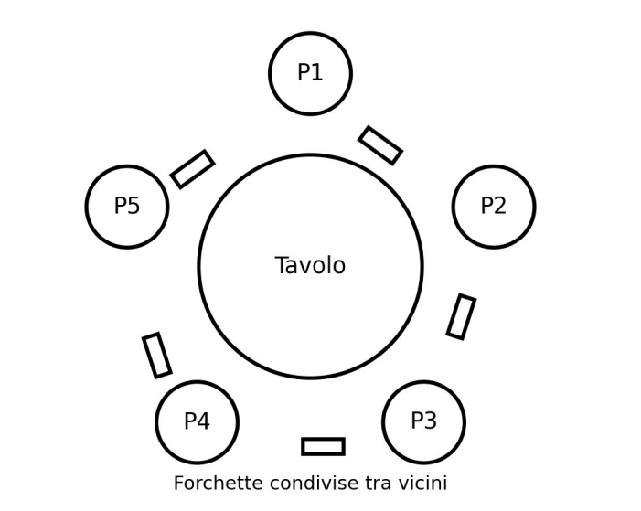
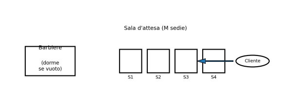

Argomento: Problemi classici nella concorrenza
Nella programmazione concorrente più thread o processi lavorano contemporaneamente
condividendo risorse.
Coordinare questo accesso senza errori è uno dei problemi fondamentali
dell'informatica.
I quattro scenari classici che seguono rappresentano pattern ricorrenti
che ogni sviluppatore deve conoscere.
I problemi principali da evitare sono la race condition (accesso non controllato a una risorsa condivisa), il deadlock (blocco reciproco tra thread), la starvation (un thread non ottiene mai accesso) e il livelock (i thread continuano a reagire l'uno all'altro senza progredire).

Uno o più produttori generano elementi e li inseriscono in un buffer di dimensione finita, mentre uno o più consumatori prelevano quegli elementi per elaborarli.
Il problema è coordinare l'accesso al buffer evitando tre situazioni critiche:
La soluzione tipica usa semafori per tenere il conto dei posti liberi e degli elementi presenti, più un mutex per proteggere la sezione critica di accesso al buffer.

Più lettori possono accedere contemporaneamente a una risorsa condivisa, come un database,
ma uno scrittore deve avere accesso esclusivo.
Le regole fondamentali sono:
Esistono diverse varianti: con preferenza ai lettori, con preferenza agli scrittori, o soluzioni eque con code FIFO. La scelta dipende dal contesto applicativo.

N filosofi siedono attorno a un tavolo rotondo.
Tra ogni coppia di filosofi adiacenti
c'è una sola forchetta.
Per mangiare un filosofo deve prendere entrambe le forchette
ai suoi lati; quando non mangia, pensa.
Il rischio principale è il deadlock: se tutti i filosofi prendono contemporaneamente la forchetta alla loro sinistra, nessuno riuscirà mai a prendere quella di destra e il sistema si blocca indefinitamente.
Una soluzione semplice ed efficace è limitare a N-1 il numero di filosofi che possono tentare di prendere le forchette contemporaneamente, garantendo che almeno uno riesca sempre a completare il pasto.

Un barbiere dorme finché non arriva un cliente.
Se arriva un cliente e il barbiere è
occupato, il cliente aspetta in una sala con M sedie disponibili.
Se tutte le sedie
sono occupate, il cliente se ne va senza aspettare.
Il problema richiede di sincronizzare correttamente gli arrivi dei clienti, il risveglio del barbiere e l'accesso alla sedia da taglio, evitando race condition sul conteggio dei clienti in attesa.
Ho scelto i problemi classici della concorrenza perché rappresentano uno degli argomenti
più concreti e applicabili dell'intero programma di TPSIT.
Non si tratta di teoria astratta:
questi stessi schemi si ritrovano in qualsiasi sistema reale che gestisce più operazioni
in parallelo, dai database ai server web.
Studiare come Java risolve questi problemi tramite semafori, lock e condition mi ha dato una visione molto più solida di come funziona la programmazione multi-thread, che è una competenza fondamentale per chi vuole lavorare nello sviluppo software.